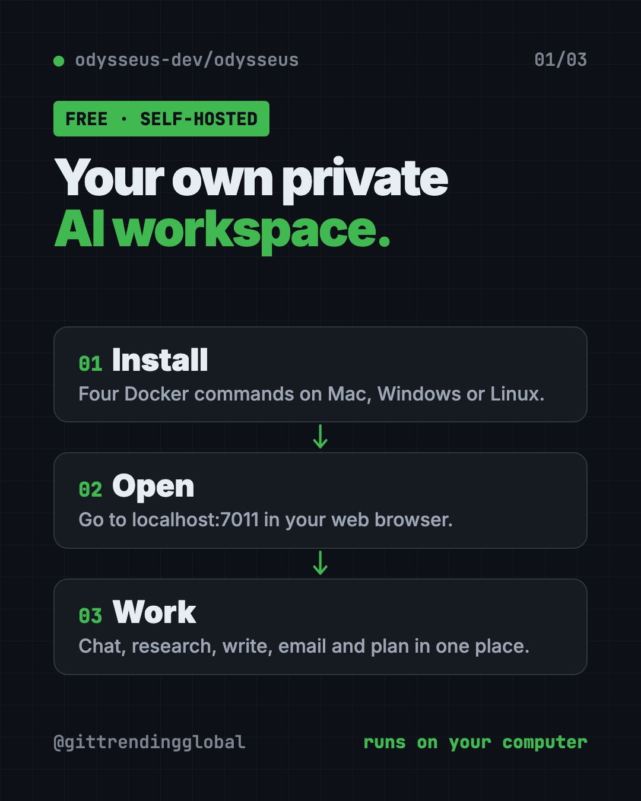
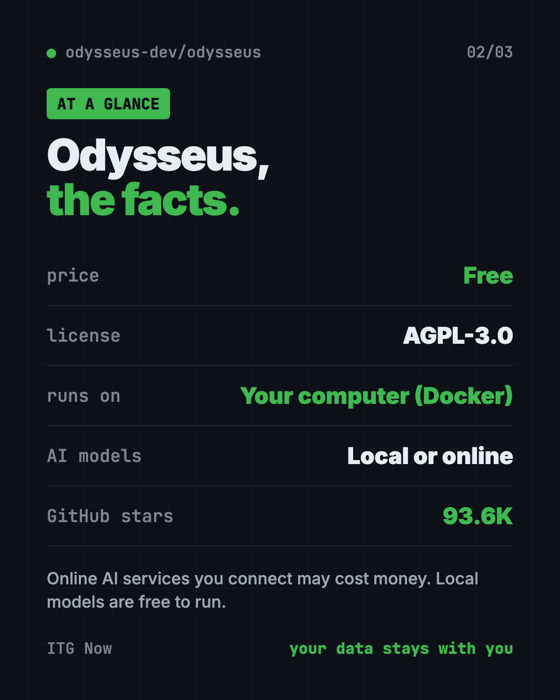
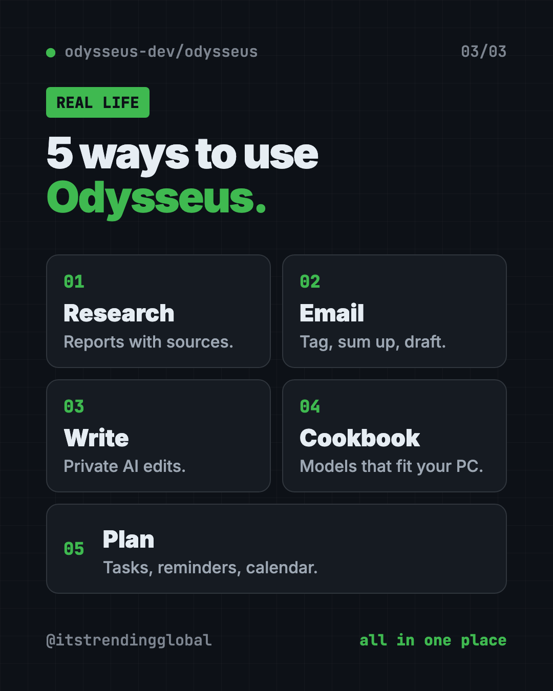

Odysseus: Free Self-Hosted AI Workspace (2026 Guide)
- Published 15 Oct 2026
- Updated 16 Oct 2026
- 7 min read
- License AGPL-3.0
- By the ITG Now team
Odysseus is a free self-hosted AI workspace that puts AI chat, deep research, documents, email, notes and a calendar in one place. You run it on your own computer, so your files and chats stay with you.
Most AI tools send every question to someone else's server. And they're spread out: one app for chat, one for notes, one for email. Odysseus pulls them together in one private space. This guide covers what it does, real ways to use it, and the exact setup steps.
Key takeaways
- Free and open source. AGPL-3.0 license, about 93.6K stars on GitHub.
- Self-hosted. It runs on a computer you control, not a company's servers.
- Many tools in one. Chat, agents, deep research, a writing editor, email, notes, tasks and calendar.
- Local or online AI. Use models on your own machine, or connect online AI services.
- Setup needs Docker. Four commands, then you open it in your web browser.
What is a self-hosted AI workspace?
"Self-hosted" means you run the software yourself. It lives on your laptop, a home server or a rented server, not on someone else's cloud.
A workspace is a single place where you do your work. So a self-hosted AI workspace is your own private, all-in-one AI office.
The README describes Odysseus as "a self-hosted AI workspace for chat, agents, research, documents, email, notes, calendar, and local model workflows." Agents are AI helpers that can take actions, not just answer.

What can Odysseus do?
Here's the feature list from the README, in plain words:
- Chat and agents. Talk to local or online AI models. The AI can use tools, files, skills and memory.
- Cookbook. It suggests AI models that fit your computer's hardware, then helps you download and run them.
- Deep Research. It searches the web in several steps, reads sources and writes you a report.
- Compare. Test two AI models side by side without knowing which is which, so you judge fairly.
- Documents. A writing-first editor with AI edits and suggestions.
- Email. Connect your inbox. It can sort, tag, summarize, set reminders and draft replies.
- Notes, tasks and calendar. Reminders, to-dos, scheduled AI tasks and calendar sync with other apps.
- Extras. An image gallery and editor, themes, uploads, web search, saved sessions and two-step login (2FA).
How to use Odysseus (real examples)
- Research a big decision. Ask Deep Research to compare three home insurance options. You get a report with the sources it read.
- Tame your inbox. Connect your email. Let it tag messages, summarize long threads and draft replies for you to check.
- Write in private. Draft a cover letter or a report in the Documents editor and ask the AI for edits, without pasting it into a public chatbot.
- Pick the right AI model. Not sure which model your laptop can handle? Open the Cookbook for suggestions that fit your hardware.
- Plan your week. Keep tasks and reminders in one place, and schedule an AI task to run on a set day.
💡 Tip: Start with one feature, like Documents or Deep Research. Once that feels natural, connect your email and calendar.
Is Odysseus free?
Yes. The software is free under the AGPL-3.0 license.
If you connect an online AI service instead of a local model, that service may charge you. Check its pricing first. Local models are free to run, but they need a capable computer with plenty of memory.
Odysseus at a glance
| Price | Free (online AI services you connect may cost money) |
| Works offline | Yes with local models. Web research and online models need internet |
| Platforms | Mac, Windows, Linux (through Docker) |
| License | AGPL-3.0 (open source) |
| Opens at | http://localhost:7011 in your browser |
| Best for | People and small teams who want private AI with email, notes and research in one place |

How to install Odysseus with Docker
You need two free tools first:
- Docker. It runs apps in neat, sealed boxes. Docker Desktop is the easy version for Mac and Windows.
- Git. It downloads code projects from GitHub.
Install Docker and open it. Then open Terminal on a Mac, or a command window on Windows. Copy and paste this:
git clone https://github.com/odysseus-dev/odysseus.git
cd odysseus
cp .env.example .env
docker compose up -d --build
When it's done, open http://localhost:7011 in your web browser.
Your first admin password is printed in the logs. Copy and paste this to see it:
docker compose logs odysseus
Sign in with that password and start exploring. The project's setup guide has extra notes for Windows, Mac, graphics cards and secure web access.
⚠️ Heads up: The default branch,
dev, gets the newest changes first. The README points tomainif you want the more carefully checked version.
Let Claude or Codex set it up for you
Claude Code and OpenAI Codex are AI helpers that can run setup steps on your computer. You paste a request, it does the steps, and you approve each one.
Copy and paste this:
Please help me install Odysseus from github.com/odysseus-dev/odysseus.
1. Check whether Docker and Git are installed. If not, explain how to get them.
2. Run the Quick Start commands from the README, one at a time.
3. Explain each step in plain words before you run it.
4. When it's running, find my first admin password in the logs.
5. Tell me how to open it in my browser.
Then try asking:
Read the Odysseus setup guide and help me connect a local AI model that fits my computer.
Check that my Odysseus install has login turned on and isn't open to the internet.
Show me how to stop and restart Odysseus with Docker.

Is Odysseus safe and private?
Because you host it, your chats and files stay on your machine. If you use an online AI model, whatever you send to that model goes to its provider.
The README is clear that Odysseus has "powerful local tools," so it asks you to keep it locked down:
- Keep
AUTH_ENABLED=true(the login) for anything reachable over a network. - Keep
LOCALHOST_BYPASS=falseoutside local testing. - Don't open raw model ports to the public internet.
⚠️ Heads up: If you're not sure how to put it online safely, keep it on your own computer. Local only is the safest start.
Our take
Odysseus packs a lot into one free self-hosted AI workspace. Chat, research, email and notes in one private place is a big deal if you care about where your data goes.
What we like:
- Many everyday tools in one app.
- Works with local models, so it can run fully private.
- The Cookbook helps you pick models your computer can handle.
- Clear security advice in the README.
What to watch for:
- Setup needs Docker and the terminal.
- Local AI models need a strong computer.
- The default branch changes fast, so expect the odd rough edge.
- AGPL-3.0 means if you run a changed version as an online service for others, you must share your code.
Want something smaller? Try Open Notebook, a free private research notebook, or Project NOMAD, a free offline knowledge server. Odysseus also made our best GitHub repos of June 2026.
FAQ
Is Odysseus free?
Yes. Odysseus is free and open source under the AGPL-3.0 license. Online AI services you connect may charge for use.
Does Odysseus work offline?
It can. With a local AI model, chat and writing run on your own machine. Web research and online models need the internet.
How do I open Odysseus after installing it?
Open http://localhost:7011 in your web browser. Your first admin password is in docker compose logs odysseus.
Can Odysseus manage my email?
Yes. It connects to your inbox and can sort, tag, summarize, set reminders and draft replies.
Do I need a powerful computer for Odysseus?
Not for the app itself. Running AI models locally works best with plenty of memory. The Cookbook suggests models that fit your hardware.
Get Odysseus: github.com/odysseus-dev/odysseus
More free notes and productivity tools
- Tolaria Tolaria is a free offline notes app for Mac, Windows and Linux. Your notes are plain files you own, with full version history and no account.
- Project NOMAD Project NOMAD is a free offline knowledge server with Wikipedia, medical guides, Khan Academy courses, maps and a local AI that work with no internet.
Latest AI news
- Meta gives away its big Muse Spark AI for free
- Blackstone says AI data-center debt fears overblown
- SAP passes €10 billion quarterly revenue for first time
- Meta creates new non-voting share class for AI
Keep reading

VoiceStudio: Free ElevenLabs Alternative
VoiceStudio is a free ElevenLabs alternative. Clone a voice, dub videos and turn text into speech on your own Mac, Windows or Linux computer.